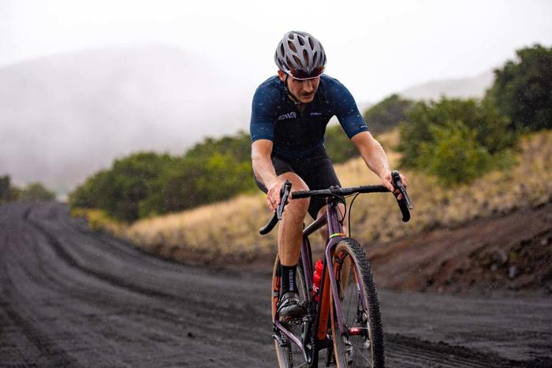
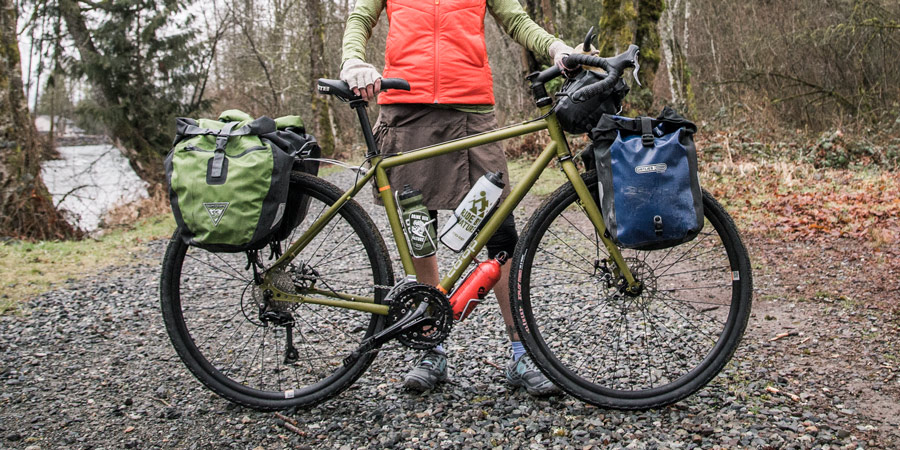

Шоссе, mtb, ситибайк и фикс — это понятно.
А что такое этот новомодный велосипед грейвел и почему его все так хотят?
Велосипед грейвел — это всегда приключение, одиночество и грязное веселье
вдали от дорог с интенсивным движением. Езда на грейвеле открывает новые маршруты,
новые местности и новые опыты на знакомой дороге.

Гравийники являются наиболее универсальными внедорожными велосипедами и
«противоядием» от теории владения велосипедами N + 1, где N —
количество велосипедов. Что такое грейвел — это меняете покрышки
с агрессивным протектором на «слики» — и асфальт ваш. Ставите ре
зину пошире и с рисунком — и смело катите по гравию.
Ну а самые «зубастые» покрышки — ваш билет в мир жесточайшего бездорожья.
Что такое велосипед грейвел?
Смешайте воедино шоссейник, велосипед для велокросса, туристический велосипед, велосипед randonnée и mtb — и получите гравийный велосипед.
По большому счету это дорожный байк, предназначенный для использования
на грунтовых дорогах. Основными конструктивными отличиями являются:
-
больший клиренс;
- место для шин (ширина треугольника и вилки) большего размера (особенно
ощутимо в сравнении с шоссе).
Помимо этого, существует столько же интерпретаций гравийных велосипедов, сколько существует типов грунтовых дорог.
Категория «грейвел» начинается с внедорожных велосипедов, и заканчивается дорожными endurance-шоссе. Грейвелы имеют зазор для шин шириной до 30 мм, а иногда и больше. Данные машины быстры, маневренные, легки и податливы в управлении, отлично работают на более ровных грунтовых дорогах, но не имеют специальной геометрии, особенностей или клиренса для более сложных приключений.
«На другом конце» грейвелы — это почти горные велосипеды, в вилки и треугольники которых могут поместиться шины для mtb размером 29 x 2,4 дюйма, иметь геометрию, ориентированную на стабильность + масса подвесок для груза (чтобы можно было катать многодневки в самых забытых богом и людьми местах).
Среднестатистический грейвел имеет:

- длинную колесную базу и расслабленную геометрию рулевого управления — для повышения устойчивости;
- более высокие стеки для более вертикального положения (stack — высота носа рамы);
- более широкий руль — для большего контроля;
- в некоторых случаях есть подвеска — чтобы поездка была помягче;
- ультра-низкая передача — для езды по крайне крутым и рыхлым склонам;
- дополнительные крепления — для перевозки воды и еды;
- широкие «зубатые» шины — для более плавной езды, лучшего сцепления и большего контроля.
Многие гравийные велосипеды также имеют крепления для крыльев и стоек для дополнительной универсальности.